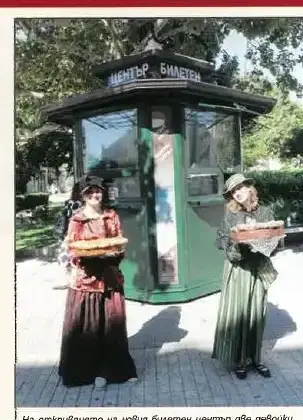
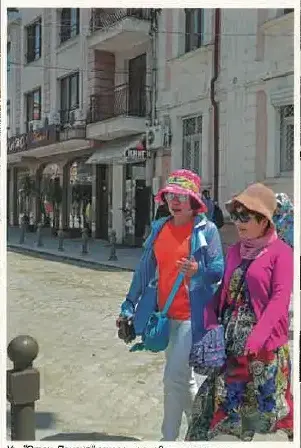
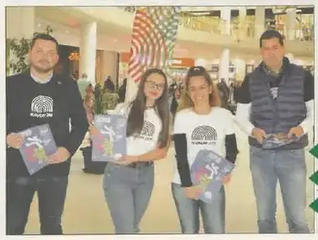

2018 — Щафетата пристига
Матера предаде щафетата през ноември. Площадът и Бунарджика — в разгар на реконструкция.
Трите акцента на годината · подбрани на ръка
Титлата пристига в Пловдив.
подробностите — на мястото им →Президентът на МОК прави копката на втория гребен канал.
подробностите — на мястото им →133 397 пътници; на 18 декември общината казва „не“ на концесията: „Рискът е прекалено голям.“
подробностите — на мястото им →Хрониката на годината · месец по месец · 17 записа: 3 събития от вестника · 14 броя
Всичко на едно място, по реда на случването. Щракни албум — разгъва се тук, без да напускаш годината. Събитията от общинския вестник отварят страницата-източник в четеца. Записите от вестника са подбраните — кадрите и текстовете им предстои да бъдат подменени с по-добри, а някои ще се слеят с разказите по темите.
 8 стр. · чети
8 стр. · четиСанират знакови сгради в центъра на Пловдив · Милионни инвестиции и 1000 нови работни места край Пловдив · Пловдив с рекорден бюджет през 2018-та година
кликни — броят се отваря в четеца · всички броеве са в секция „Вестникът“ → 8 стр. · чети
8 стр. · четиПловдив ще има по-чист въздух · Голямата базилика под стъкло, вечер грее · Пловдив е все по-горд и различен, идват паметни за града събития
кликни — броят се отваря в четеца · всички броеве са в секция „Вестникът“ → 8 стр. · чети
8 стр. · четиПловдив и Солун с общи проекти · „Галерия 2019“ – новата зала за изкуството в Пловдив · Приемът за 1-ви клас – по нови правила
кликни — броят се отваря в четеца · всички броеве са в секция „Вестникът“ → 8 стр. · чети
8 стр. · четиГолямата базилика и мозайките в списък на ЮНЕСКО · Световни лидери си дават среща на форум в Пловдив · С любов и уважение Пловдив пази културното си наследство. Горди сме!
кликни — броят се отваря в четеца · всички броеве са в секция „Вестникът“ → 8 стр. · чети
8 стр. · чети 8 стр. · чети
8 стр. · чети„Златен век“ за четирима пловдивчани · Младежкият център с европейски знак за качество · Гарата в Пловдив – център, обединяващ автобусен и жп транспорт
кликни — броят се отваря в четеца · всички броеве са в секция „Вестникът“ → 8 стр. · чети
8 стр. · четиАнтичният Одеон се преобразява за нов живот · Пловдив финансово устойчив – номер 1 · Общината дава рамо за дигитализация и спортни площадки
кликни — броят се отваря в четеца · всички броеве са в секция „Вестникът“ → 8 стр. · чети
8 стр. · чети60 000 фенове на рока се събраха на фестивала Hills of Rock · Проект за 24 млн. лв. променя градската среда · Представиха етапите по реконструкцията на стадион „Пловдив“
кликни — броят се отваря в четеца · всички броеве са в секция „Вестникът“ →
стр. 4С официална церемония на Главната беше открит нов билетен център, разкрит по инициатива на Общинския институт „Старинен Пловдив“. Дизайнът му е вдъхновен от архивни снимки на града от миналия век, а центърът предлага билети за концерти у нас и в чужбина.
Марица ГРАДЪТ · септември 2018 · стр. 4 — отвори страницата → 8 стр. · чети
8 стр. · чети19 май 2015 година: Да, Пловдив е! · 100 дни преди старта на „Пловдив – европейска столица на културата“ · Празници на Стария град 2018 – програмата
кликни — броят се отваря в четеца · всички броеве са в секция „Вестникът“ →
стр. 7След основен ремонт емблематичната улица „Отец Паисий“ се превърна във втората Главна на Пловдив. Подменена е цялата подземна инфраструктура, паважът е пренареден, а част от улицата заедно със съседната „Генерал Гурко“ до Одеона станаха пешеходни.
Марица ГРАДЪТ · септември 2018 · стр. 7 — отвори страницата → 8 стр. · чети
8 стр. · четиОще един завод изникна край града · Детска ясла „Веселушка“ с ново крило · Пловдив се представи в Париж, чака най-големите в туризма
кликни — броят се отваря в четеца · всички броеве са в секция „Вестникът“ → 8 стр. · чети
8 стр. · четиГрадът е с нова визия в навечерието на Европейска столица на културата · До откриването на Европейска столица на културата на 12 януари 2019 г. остават 100 дни
кликни — броят се отваря в четеца · всички броеве са в секция „Вестникът“ → 8 стр. · чети
8 стр. · четиКино „Космос“ – отвън същото, вътре – преобразено · Стадион с многоетажен паркинг, нова организация на движението · Олимпийско злато за Пловдив
кликни — броят се отваря в четеца · всички броеве са в секция „Вестникът“ → 8 стр. · чети
8 стр. · чети39 милиона от туризъм в града за девет месеца · Световното първенство по таекуон-до отново в Пловдив · Градът със световно значение за културното наследство
кликни — броят се отваря в четеца · всички броеве са в секция „Вестникът“ →
стр. 1Кметът Иван Тотев се включи в доброволческа информационна кампания на Фондация "Пловдив 2019" в мол "Пловдив Плаза", където заедно с изпълнителния директор Кирил Велчев раздаваше брошури за откриващия уикенд с над 30 събития. Над 1000 доброволци, включително от чужбина, вече са част от програмата на Европейската столица на културата.
брой 44 · стр. 1 — отвори страницата → 8 стр. · чети
8 стр. · четиНад 1000 доброволци в програмата на „Пловдив 2019“ · Над 9 на сто ръст на заплатите в Пловдив · Пловдив с европейски принос за култура
кликни — броят се отваря в четеца · всички броеве са в секция „Вестникът“ →